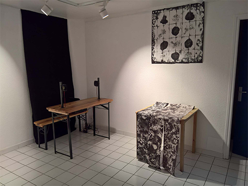
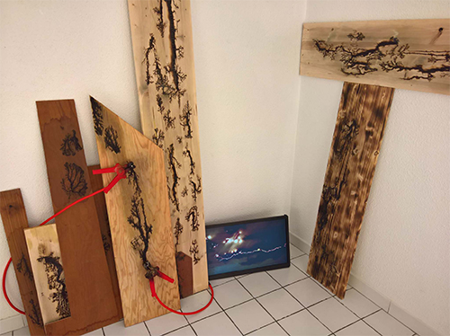
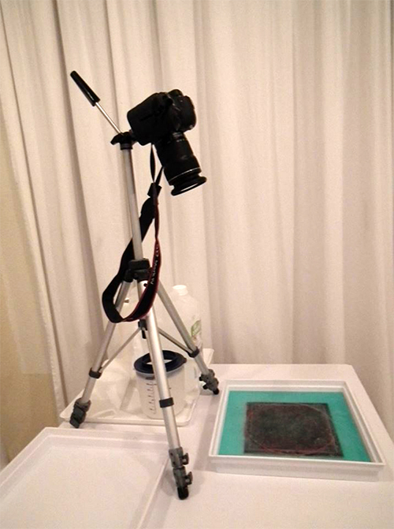
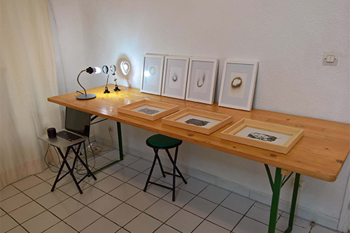

Iris, source lumineuse équipée dʼun prisme, spectre lumière du jour (sans les rouges), loupes et support, dimensions variables, Sabrina Issa, LAAB 2018.
RESIDENCE DE RECHERCHE
Restitution du projet de résidence, dimanche 28 oct. de 14h à 18h30
A la suite à l'exposition collective l'Art se fait Nature, le LAAB à souhaité prolonger la rencontre, en invitant Philippe Brière, sur le temps de sa résidence à la Maison d'Emma.
Les recherches ont été menés in situ, ce même espace devenant tour à tour, matériau, work in progress, ou exposition. L’expérimentation permet le déploiement du potentiel interne et externe des pièces, comme de leur agencement susceptible de créer une réaction en chaîne ou de laisser libre cours à une incidence en voisinage.
Ces différents moments de la résidence sont considérés comme un état possible de l’installation.
L’espace d’exposition est collectif et accueille :
- le travail de fabrication
- la matière première
- une perméabilité de l’environnement
- L’ouverture au public
L’espace de la Maison d’Emma est envisagée comme un espace de construction et d’exposition du travail. Le point de départ de ce projet d’exposition est une approche de l’art « en train de se faire » et comprenant une fréquentation du public et une altérité possible de l’ensemble.

Vue d'installations, à gauche, dispositif sonore binaural Nicolas Bralet, à droite, empreintes in situ sur papier thermique, Philippe Brière, LAAB 2018.

Arborescences électriques, installation et vidéo, dimensions variables, Delphine Chevrot, LAAB 2018.

Résolution chimique de la quadrature du cercle, gravure, enregistrement vidéo, zinc, mordant de bordeaux, Sabrina Issa, LAAB 2018.

Vue de la restitution, Roches soufflées de Nicolas Bralet, Décaissement, photographies, papiers, 24 x 30 cm, Sabrina Issa et Iris Loupes et lampe munie d'un prisme, Sabrina Issa LAAB 2018.